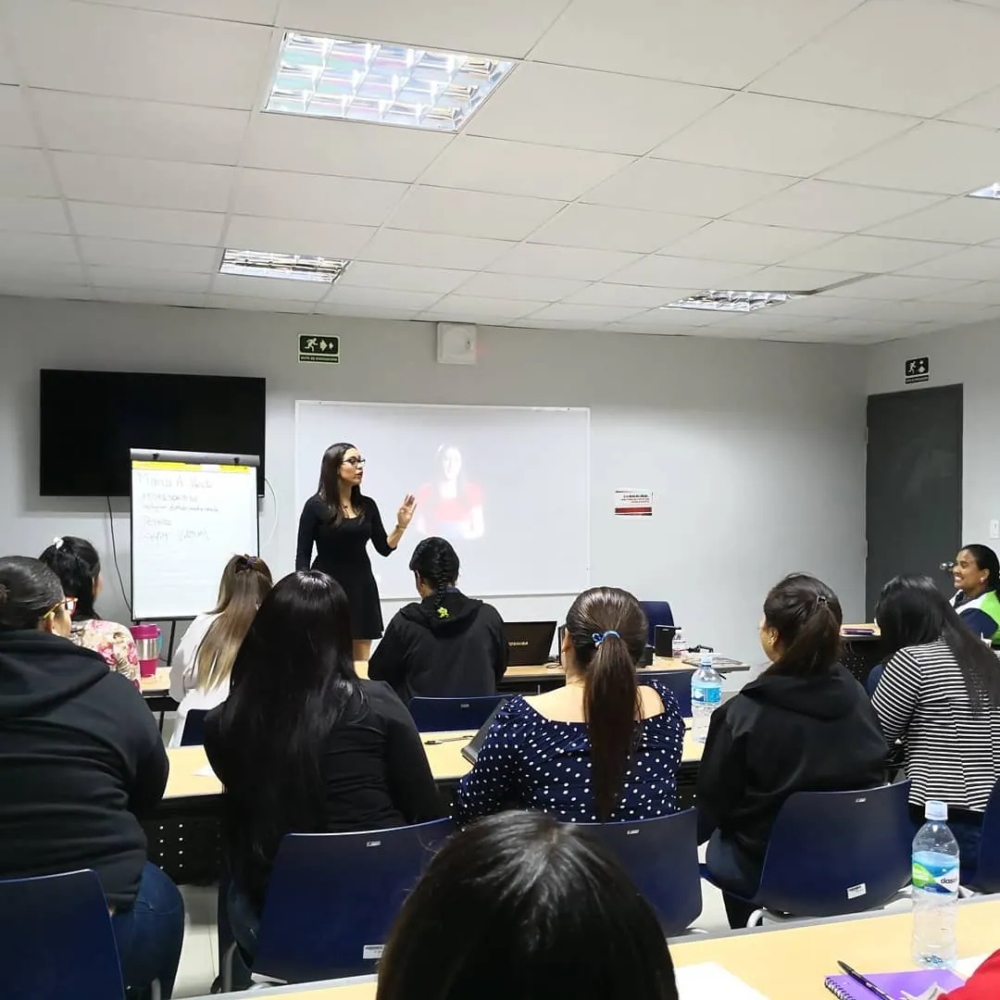
Neurocomunicadora
Fundadora de Speak Free Latam
Terapeuta sistémica y consteladora familiar. Formada en programación neurolingüística, comunicación no verbal, ciencia de la voz y resolución de conflictos.
Escúchate, comunica e inspira
Hay personas que saben mucho y aun así no logran que nadie las escuche. Mariandre trabaja en ese espacio entre lo que una persona sabe y lo que logra transmitir.
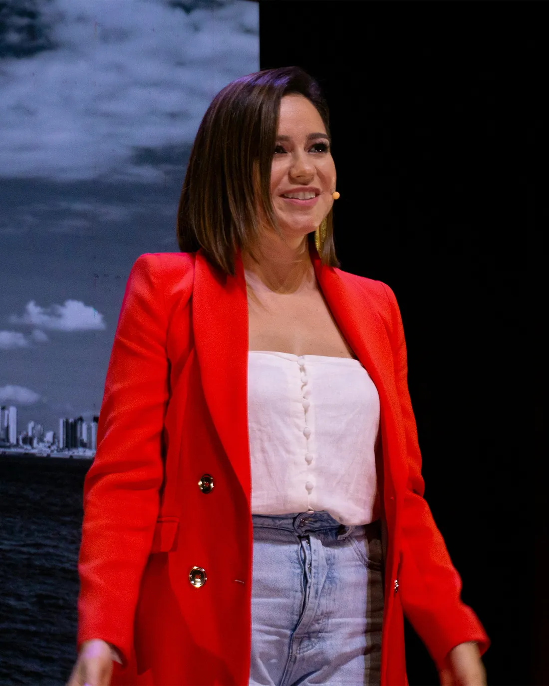
años en comunicación y medios
conferencias corporativas
personas alcanzadas, presencial y online
países: de Panamá a Suiza
Hay personas que saben mucho y aun así no logran que nadie las escuche. Líderes cuyo equipo asiente en la reunión y hace otra cosa al salir. Profesionales brillantes que se paralizan frente a un micrófono. Mariandre Varela dedica su vida a ese espacio entre lo que una persona sabe y lo que logra transmitir, porque ahí se pierden carreras, equipos y relaciones.
Empresas, instituciones y escenarios
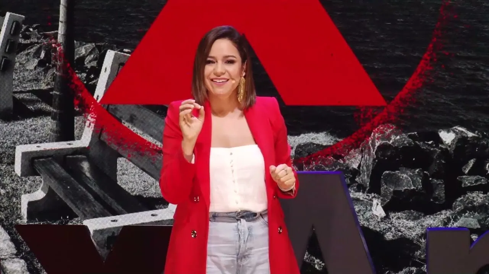
Un recorrido por el diálogo interno: la conversación más constante y menos revisada de todas. Hoy es también su keynote para congresos y convenciones.
Neurociencia aplicada, terapia sistémica y entrenamiento escénico. No enseña comunicación: la encarna en la sala.

Terapeuta sistémica y consteladora familiar. Formada en programación neurolingüística, comunicación no verbal, ciencia de la voz y resolución de conflictos.
Licenciada en Comunicación Social. Creadora y locutora de programas de radio, presentadora de noticias y docente de locución.
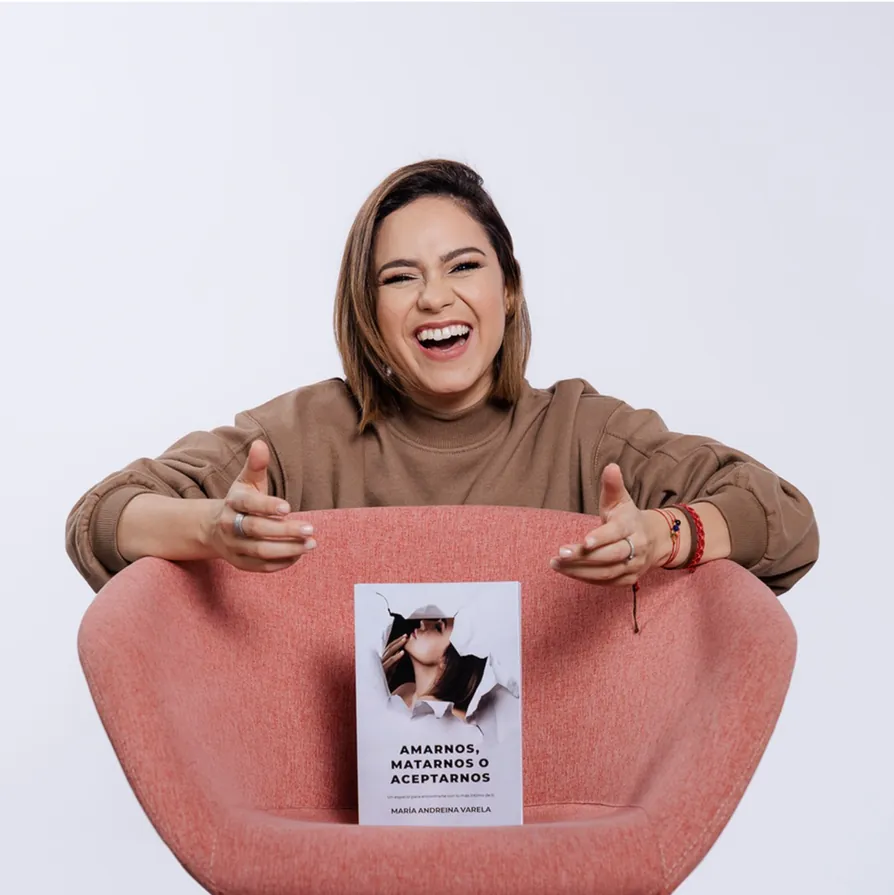
Publicado por PanHouse.
Comprar en Amazon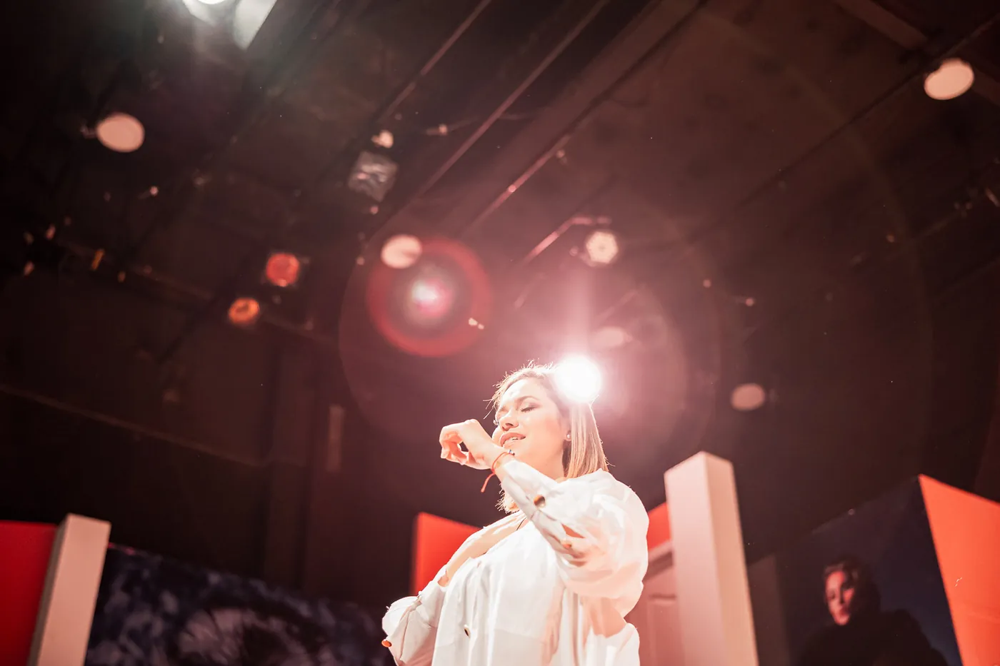
El monólogo basado en su libro, seguido de facilitación en vivo. Teatro que se convierte en trabajo emocional colectivo.
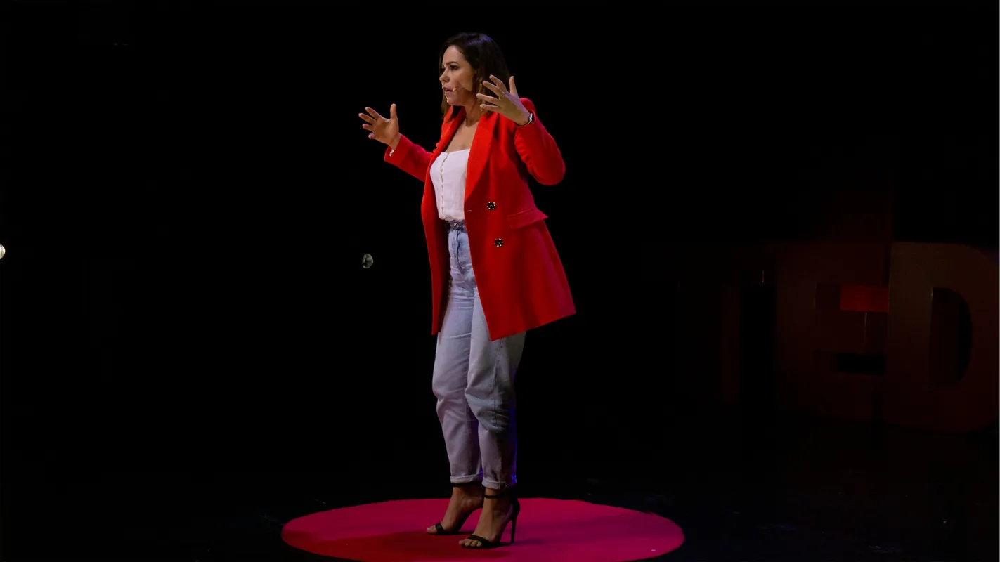
De la charla TEDx nació su podcast y su keynote.
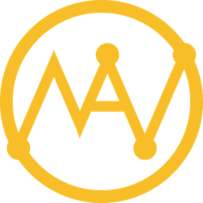
Un conferencista explica la comunicación. Una actriz la sostiene bajo presión. Una terapeuta sistémica entiende por qué un grupo repite el mismo patrón durante años. Las tres cosas ocurren en la misma sala, con la misma persona.
La mayoría de los entrenamientos de comunicación empiezan por la técnica, y por eso duran lo que dura el aplauso. Este trabajo empieza por lo que impide que la técnica se aplique.
Antes de que alguien decida callar en una reunión, ya aprendió a callar en otro lugar. Aquí se identifica el patrón que gobierna la conducta comunicacional del equipo.
Postura, mirada, gesto y ocupación del espacio. El cuerpo comunica la jerarquía real de la sala, no la del organigrama.
Ritmo, pausa, volumen y respiración. Cuando el paralenguaje contradice al mensaje, la audiencia le cree al paralenguaje. Esto se entrena y se mide.
Cada formato es una experiencia de conversación: la sala participa y se lleva algo que aplicar. Ninguna conferencia se dicta igual dos veces.
El equipo identifica sus debilidades, genera empatía con sus compañeros, mejora la comunicación y aumenta la productividad.
La sala comprueba, sobre sí misma, que su cerebro completó información que nunca recibió. Incómodo, divertido e inolvidable.
Cada participante descubre su estilo comunicacional y modela técnicas de comunicación para ser líder de alto impacto.
La audiencia revisa, en vivo, la conversación que tiene consigo misma.
La audiencia se lleva una frase, una acción y un compromiso.
Requiere coordinación técnica, escenografía y ensayo de sala. Se cotiza junto con el equipo de producción del evento.
Cada intervención deja a la organización un registro de lo que apareció en la sala: el punto de partida del programa de transformación cultural, si la empresa decide continuar.
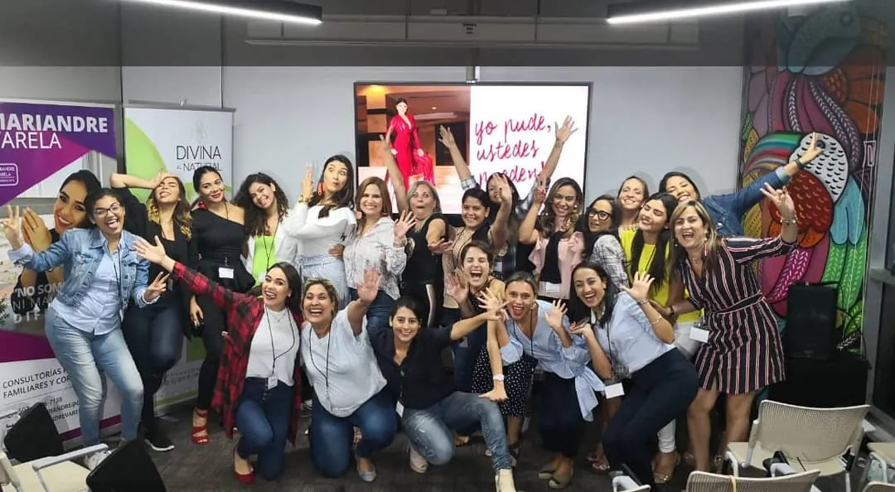
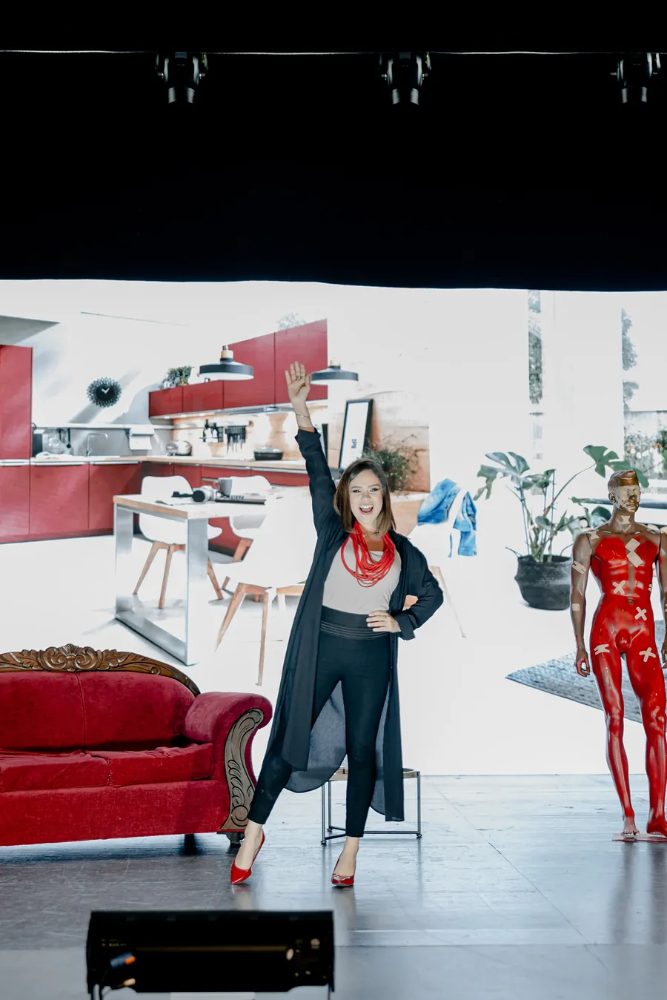
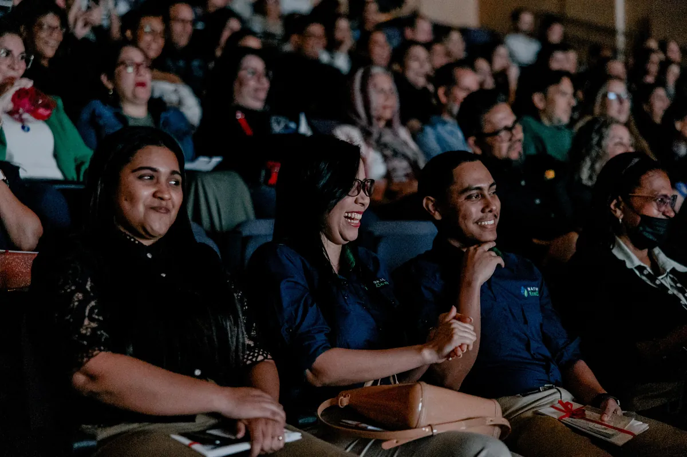
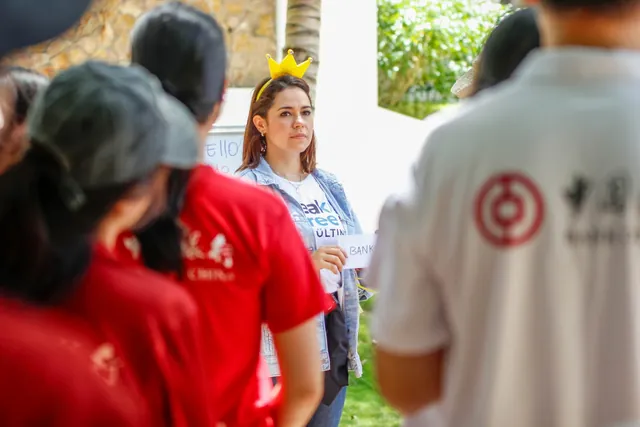
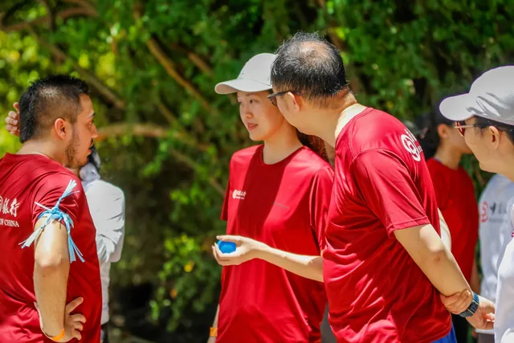
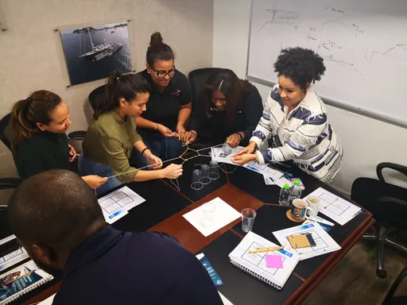
Objetivo del evento, audiencia, tensiones internas y resultado esperado.
Casos, ejemplos y lenguaje ajustados a tu sector y a tu realidad.
La experiencia en vivo, con coordinación técnica previa.
Patrones observados y recomendaciones concretas para el liderazgo.
Material de refuerzo y reunión de cierre para evaluar continuidad.
Colaboración de creación de contenido con marcas que compartan los valores de Mariandre.
Invita a Mariandre a tu podcast para que le dé contenido de valor a tu audiencia.
Keynote, moderación o experiencia teatral para tu evento, con briefing a la medida.
Conferencias y talleres de neurocomunicación para tus líderes y equipos comerciales.
Sí, todas las experiencias se pueden adaptar a formato virtual.
Siempre. Toda contratación incluye un briefing estratégico y la adaptación de casos, ejemplos y lenguaje a tu sector. Ninguna conferencia se dicta igual dos veces.
Recibes un registro de sala con los patrones observados y recomendaciones para el liderazgo, un kit digital para los participantes y una reunión de cierre para evaluar continuidad.
Depende del formato y la agenda. La experiencia teatral A.M.A. requiere un mínimo de ocho semanas por su producción técnica.
Sí, es posible trabajar y llevar las experiencias a otros países y ciudades de habla hispana.
Treinta minutos, sin propuesta previa y sin compromiso. Salimos de esa conversación con el formato correcto para tu evento o tu marca, la fecha y el alcance.